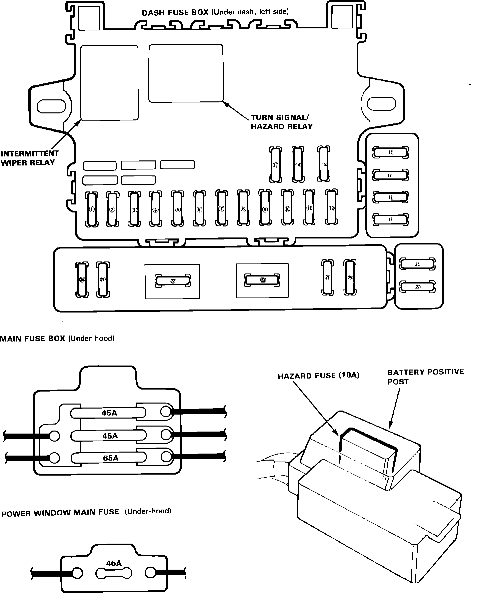

Operation CHARM
: Car repair manuals for everyone.
Home
>>
Acura
>>
1987
>>
Integra L4-1590cc 1.6L DOHC FI
>>
Repair and Diagnosis
>>
Wiper and Washer Systems
>>
Wiper Relay
>>
Locations
Wiper Relay: Locations
Fig. 1 Fuse Box.:
